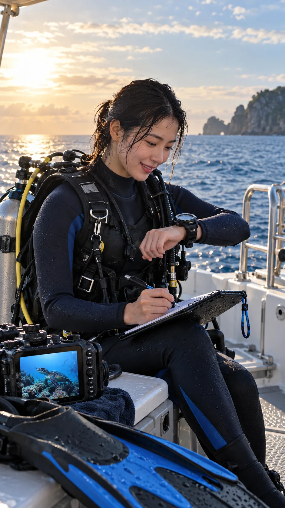
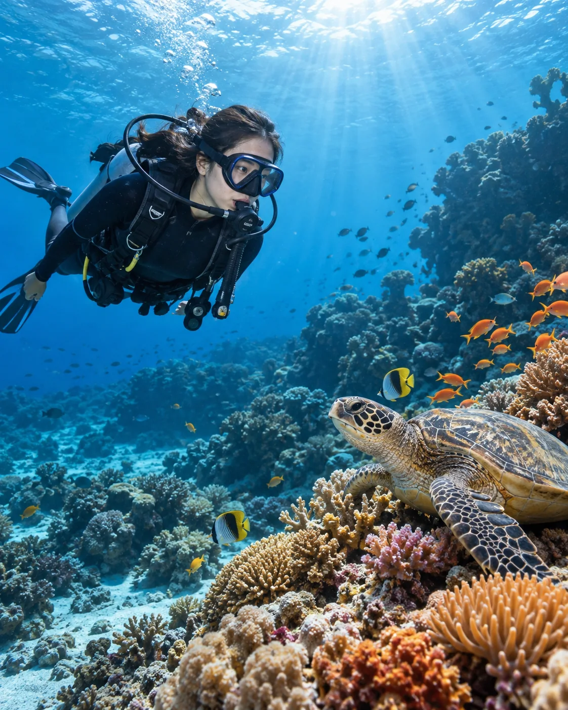
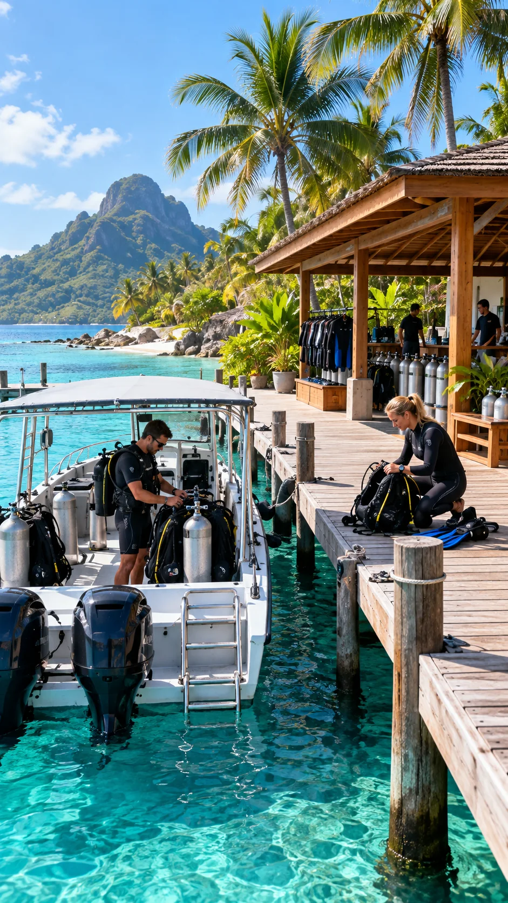
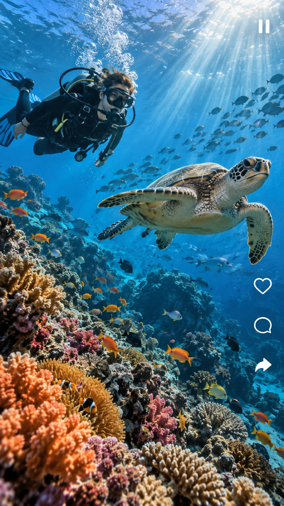
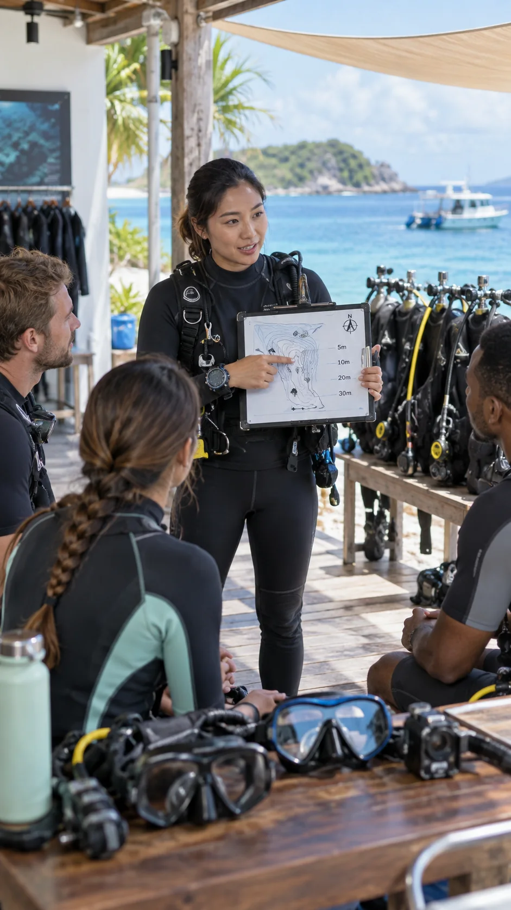
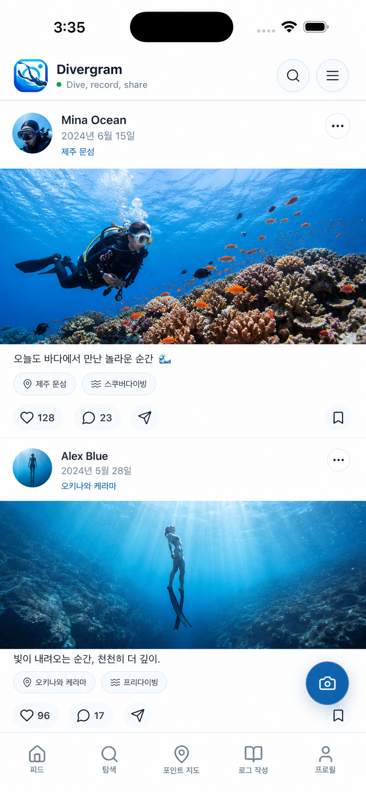

01
AI DIVE LOG
나만의 다이빙 로그
사진, 음성, 다이빙 컴퓨터와 환경 정보를 한곳에 모으고 AI 제안을 확인해 나만의 기록을 완성하세요.

GLOBAL DIVING PLATFORM
오늘의 바다를 기록하고, 세계의 새로운 포인트를 발견하고, 국경을 넘어 다이버들과 경험을 나누세요. Divergram은 전 세계 다이버의 다이빙 전과 후를 연결하는 글로벌 서비스입니다.
iPhone · iPad · Android 지원

ONE OCEAN, GLOBAL COMMUNITY
종이 로그북과 지역마다 흩어진 정보는 이제 그만. Divergram 하나로 세계 어디서든 나의 다이빙 여정을 기록하고 글로벌 다이빙 커뮤니티와 연결할 수 있습니다.
AI DIVE LOG
사진, 음성, 다이빙 컴퓨터와 환경 정보를 한곳에 모으고 AI 제안을 확인해 나만의 기록을 완성하세요.

DISCOVER
지도에서 다이빙 포인트를 찾고, 리조트의 위치와 사진, 편의시설, 가격 정보를 확인하세요.

COMMUNITY
수중 사진, 영상, 리뷰와 생생한 경험을 공유하고 전 세계 다이버에게 영감을 받으세요.

DIVER IDENTITY
보유 라이선스를 등록하고 레벨별 교육 정보를 확인해 다음 다이빙을 준비하세요.

MORE IN DIVERGRAM
사진과 동영상의 AI 후보를 사용자가 확인하고, 언어에 관계없이 해양생물 정보를 찾아보세요.
안전, 장비, 기술과 해양환경에 대한 Divergram 제작 콘텐츠를 한국어·영어·일본어·중국어로 확인합니다.
예약 가능한 리조트의 일정과 정보를 확인하고, 예약 내역과 진행 상태를 관리합니다.
게시물, 릴스, 로그, 도감, 즐겨찾기와 다이빙 스탬프를 한눈에 확인합니다.
중요한 활동 알림을 놓치지 않고 다른 다이버와 편하게 소통합니다.
한국어·영어·일본어·중국어와 라이트·다크 테마를 지원합니다.
THE APP
필요한 기능은 빠르게, 다이빙의 기억은 더 선명하게.

DIVE RESPONSIBLY
Divergram의 정보는 다이빙 계획을 돕기 위한 참고 자료입니다. 현장 조건과 개인의 자격·경험을 확인하고, 공인 교육과 버디 시스템 등 안전 수칙을 항상 우선해 주세요.
안전 정책 보기 →READY TO DIVE?